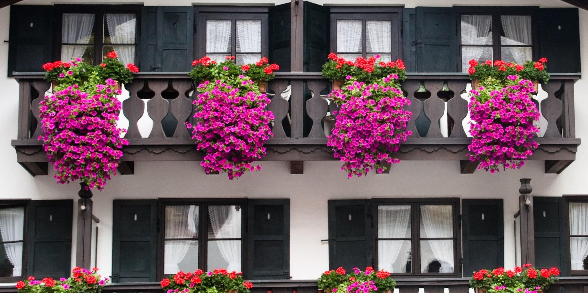

Horoskop - Moj Horoskop
2021.03.16 14:22
Domov Dnevni horoskop Tedenski horoskop Mesečni horoskop Letni horoskop Aktualni članki Astrološki članki Natalna karta Astrološka znamenja Planeti Astrologi O nas Želim prejemati tedenski horoskop Domov Horoskop Dnevni horoskop Tedenski horoskop Letni horoskop Astrološka znamenja Horoskop Oven Horoskop Bik Horoskop Dvojček Horoskop Rak Horoskop Lev Horoskop Devica Horoskop Tehtnica Horoskop Škorpijon Horoskop Strelec Horoskop Kozorog Horoskop Vodnar Horoskop Riba Planeti Natalna karta Astrologi Astrologinja Špela Plemelj Astrologinja Cvetka Astrologinja Stanka O nas
Horoskop
Današnji horoskop
Preberi, kaj se dogaja danes
na nebu.
Dnevni horoskop Dnevni horoskop | Tedenski horoskop Mesečni horoskop | Letni horoskop
Grško “ horoscopos ” pomeni “ kar zadeva uro “. Beseda je sinonim za zemljevid neba.
V astrologiji običajno rečemo horoskopu astrološka karta. Največkrat se za to smatra natalno karto.
Horoskop v resnici ima zelo malo skupnega s horoskopi, ki se pojavljajo v raznih časopisih in revijah, kot tudi s horoskopi na številnih spletnih straneh. Ti horoskopi ne upoštevajo celotnega zapisa zvezd na nebu (astrološke karte) za posameznika, ampak upoštevajo zelo malo dejavnikov in zato podajo bolj spačeno sliko.
Obstajajo trije glavni tipi horoskopov:
rojstni horoskop , ki predstavlja rojstno astrološko karto ali natalno karto,
letni horoskop z napovedmi za določeno leto,
horoskop revolucije Sonca , ki se spreminja letno, glede na povratek sonca na svoje natalno mesto.
Za izdelavo svojega rojstnega horoskopa, lahko tudi države ali horoskopa katerega drugega subjekta potrebujete:
datum rojstva čas rojstva (točno uro rojstva) kraj rojstvaAstrološki računalniški program
Včasih so astrologi risali horoskope ročno. Danes nam pri tem pomagajo številni astrološki računalniški programi. Denimo eden takih, ki je zelo razširjen med astrologi je SolarFire (obstaja tudi okleščena različica tega programa za iPad, pod imenom AstroGold ).
V program vnesemo datum rojstva, čas rojstva, kraj rojstva in že nam program izriše rojstni horoskop.
Na mojhoroskop.si si laho sami izrišete natalno karto, ne da bi vam bilo potrebno kupovati računalniški program: NATALNA KARTA .
(Opisi so v angleščini.)
Astrološke hiše področja v horoskopu
Horoskop se deli na dvanajst delov. Te dele, ki so običajno ločeni s črtami imenujemo astrološke hiše. Vsaka hiša predstavlja določeno področje v našem horoskopu:
Prva hiša predstavlja nas, naše telo, izgled Druga hiša predstavlja naše finance, odnos do denarja, vrednote Tretja hiša predstavlja naše mišljenje, govor, brate sestre, kratka potovanja, drobno trgovanje Četrta hiša predstavlja naš dom, očeta (tradicionalna astrologija), zatočišče, izvor Peta hiša predstavlja naše hobije, naše otroke, to kar imamo radi, ljubice ljubimce Šesta hiša je hiša vsakdanjih opravil, dela, storitev, marljivosti Sedma hiša je hiša odnosov, partnerja, diplomacije Osma hiša je hiša poglobljenih odnosov, hiša preobrazbe, opravljanja denarja drugih (vlaganja ), kriz, dediščine, smrti Deveta hiša je hiša študija, tujine, poučevanja, potovanj Deseta hiša je hiša statusa, hiša posla, šefov Enajsta hiša je hiša prijateljev, povezovanja, skupin, enakopravnosti, skupnega dobro Dvanajsta hiša je hiša duhovnosti, kolektivnega, ujetostiPoznamo različne sisteme hiš. Na zahodu najpogosteje uporabljen je Placidus, vendar se zadnje čase vse bolj uporablja tudi Kochov sistem, ki je nekoliko novejši in naj bi bil nekoliko bolj natančen ne glede na to, kje na Zemlji smo bili rojeni.
Znamenja v horoskopu
Horoskop je razdeljen na dvanajst znamenj. Z energijo oz. značilnostmi, ki jo ima določeno znamenje, obarva hišo v katero pade.
Astrološka znamenja :
Oven Bik Dvojček Rak Lev Devica Tehtnica Škorpijon Strelec Kozorog Vodnar RibaPlaneti v horoskopu
Vsak planet ima, tako kot znamenja, določeno enrgijo in značilnosti. Z njimi obarva področje (hišo) v katero pade.
Več o planetih
Današnji dnevni horoskop Tedenski horoskop Mesečni horoskop Letni horoskop Astrološka znamenja Planeti Astrološki članki
Uporabno
Natalna kartaSonce in luna trenutno
Sonce v Ribi
Luna v Biku
Rastoča Luna
2 dni stara
Astrološka znamenja
Horoskop Oven Horoskop Bik Horoskop Dvojček Horoskop Rak Horoskop Lev Horoskop Devica Horoskop Tehtnica Horoskop Škorpijon Horoskop Strelec Horoskop Kozorog Horoskop Vodnar Horoskop Riba Moj Horoskop HoroskopDnevni horoskop - današnji horoskop
Tedenski horoskop
Mesečni horoskop
Letni horoskop
Natalna karta - astrološka karta - rojstna karta
Astrološka znamenja
Astrologi
Planeti Jupiter
Astrološki članki Aktualni članki
Splošni članki
O nas Politika zasebnosti in piškotki
Pogoji uporabe
Sponzorirane povezave © 2012-2020 Moj Horoskop | Design: Beautiful Creation
